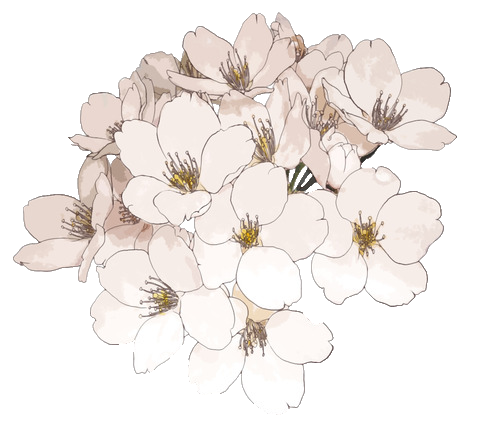

WELCOME
Hello, I'm Nida! Learn more about me on my travels and some snapshots of my
life.

I'm a graduate student at the University of Michigan's School of Information studying
Human-Computer Interaction. I'm currently finishing up my first-year and planning completing
my first UX Design internship this summer. Outside of my professional work, I really enjoy taking road
trips and photography. I also have two beautiful cats that I love to hangout with. Learn a
bit more about me by exploring this site and feel free to connect!
Also, please feel free to send any reading and Netflix suggestions my ways as well - with
summer break coming up, I know I'll be needing more of those :)